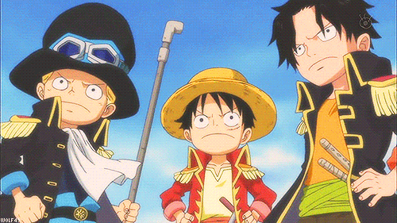

HTML Images
2) Use the HTML image attributes to set the size of the image to 250 pixels wide and 400 pixels tall

3) Use CSS style to set the size of the image to 250 pixels wide and 400 pixels tall

4) Use the correct HTML to make the image become a link
5) Make an image float to the right of the paragraph. You may use any image and paragraph
 The image will float to the right of the paragraph
The image will float to the right of the paragraph
6) Write a correct HTML attribute to display the animated image (gif image). You may use any animated image

7) Specify an alternate text for an image. The alternate text should say "Smiley". Alternate text is useful when the image cannot be displayed, like when the page is read by a screen reader

HTML Colors
8) Set the background color.
“HELLO WORLD”
Life brings us as many joyful moments as it does downfalls, and although there are days we wish there was a manual to follow, it simply wouldn’t be the same without the spontaneity. The journey of life may not become easier as we grow older, but we do seem to understand it better as our perspectives evolve.
9) Please add border to each headings.
Hello
Hello
Hello